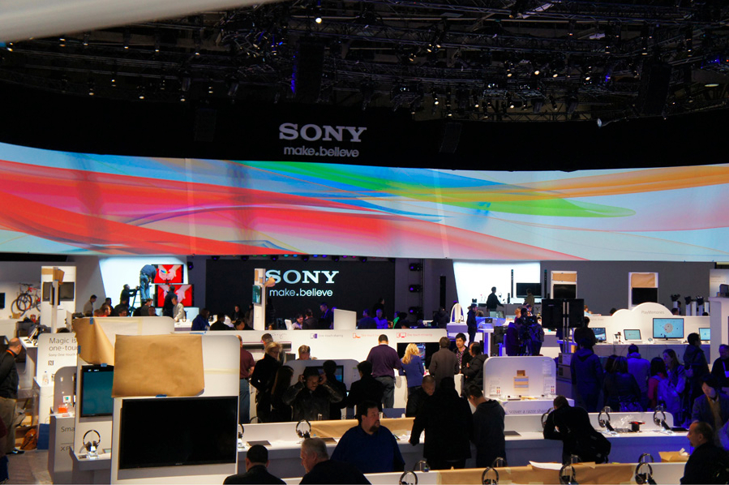

A video of the former Sony CEO, Kazuo Hirai, giving a speech on Sony's philosophy, moving people emotionally, innovation, immersive entertainment and Sony's latest devices at a press briefing at IFA in Belin.
A picture of some of the original Sony Walkmans, a product that made Sony a household name many many years ago.
A documentary made on the Sony Walkman, and the impact it's had on modern day life and technology.

A picture of Sony's massive booth at a technology convention in Las Vegas.
A video from a convention of Sony holding a showcase conference, discussing technology and even showing off some of it's new and future products.